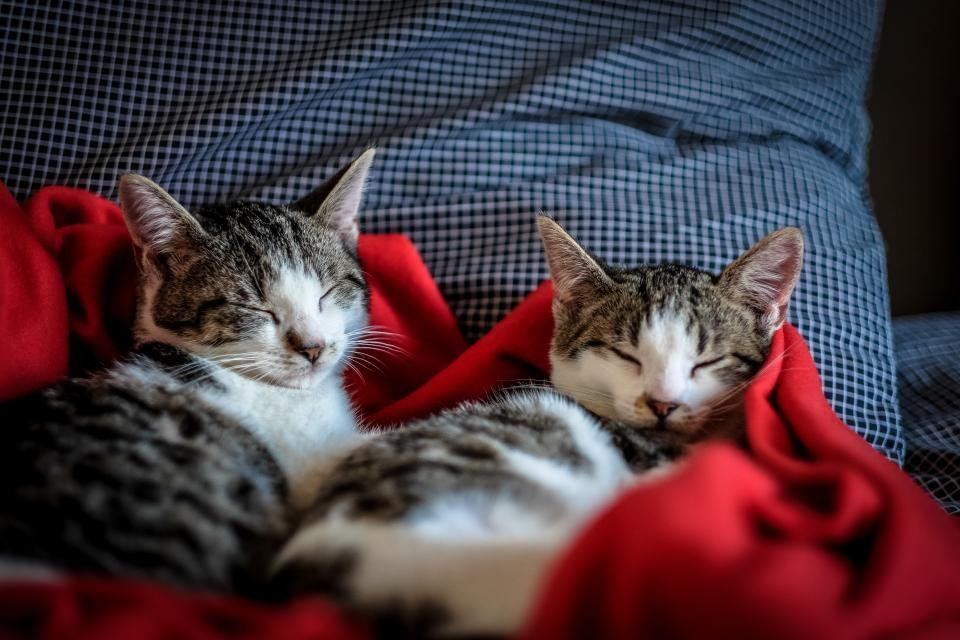

Filt, klor eller hela pälsen?
Avfiltning hemma
Filt och tovor bort i små pass, utan narkos och utan bilresa.
Läs merHygienklipp
Rumpa, mage och baktassar för långhåriga katter som blir smutsiga.
Läs merBad i eget badrum
Vi tar med halkmatta, kattschampo och lågljudsfön.
Läs merKlor och tassar
Kloklipp och trim mellan trampdynorna, tio minuter i soffan.
Läs merFlerkattshushåll
Rabatt från andra katten i samma hem.
Läs merKattuppfödare
Utställningsbad och puts för perser, brittiskt korthår och ragdoll.
Läs merPriser och resa
Resan ingår inom tre mil från Gävle.
Läs merBoka hembesök
Vi kör måndag till lördag.
Läs mer
Katter vi har besökt
 01
01Morris
KlarPerser · Avfiltning hemma · 2026 02
02Sigrid
StamkundNorsk skogkatt, 16 år · Hygienklipp · 2026 03
03Kungen och Prinsen
KlarBrittiskt korthår · Flerkattshushåll · 2025 04
04Lakrits
StamkundLånghårig huskatt · Klor och tassar · 2025
05Kull F hos katteri Vinterek
KlarRagdoll · Utställningsbad · 2026

Katten slipper buren – boka ett hembesök så kommer vi till er.
Sju år av köksbord och badrumsgolv
Kattluckan startade 2019 av Josefin Almgren i Gävle. Hon hade klippt katter på en salong i Uppsala i sex år och såg samma sak varje vecka: katter som var helt lugna hemma men som kissade i buren, flämtade i bilen och var för stressade för att hanteras när de väl kom fram.

- 010transportburarBehövs för besöket
- 023bilarI Gävleborg och Uppland
- 0390minAvsatt per hembesök
- 042 600katterBehandlade hemma sedan 2019
Frågor om hembesöken
- Illustrationsbild

- Fråga 01
Vad måste finnas hemma hos mig?
Ett eluttag, en diskbänk, ett bord eller ett badkar. Allt annat tar vi med oss.
- Fråga 02
Klipper ni hundar också?
Nej. Vi luktar bara katt, och det är en av anledningarna till att katterna slappnar av.
- Fråga 03
Hur långt åker ni?
Resan ingår inom tre mil från Gävle, Söderhamn eller Tierp. Längre bort tar vi 6 kronor per kilometer.
Hittar du inte svaret? Ring eller mejla oss.
070-174 06 53Boka hembesök- Fråga 04
Kan ni hjälpa en katt som biter?
Oftast. Vi använder handduksteknik och korta pass, och slutar om katten blir för stressad.

- Fråga 05
Kan ni klippa en katt med hjärtfel?
Vi vill att veterinären har godkänt behandling först. Vi arbetar då i extra korta pass.
Kattägare som slapp buren
Morris har sövts två gånger för tovor. Nu kommer Josefin hem och han ligger kvar i badkaret.
Vi har fyra katter och ingen bil. Att de kom hem till oss löste allt.
Samir badade hela kullen hemma hos oss dagen före utställningen. Ingen kattunge åkte bil i onödan.
Ett pris per katt, bilresan bjuder vi på
Klor och tassar
Det snabbaste besöket.
- Kloklipp alla fyra tassar
- Trim mellan trampdynorna
- Titt i öron och ögon
- Resa inom tre mil
Hemtrim
Bad, avfiltning eller hygienklipp hemma.
- Bad med kattschampo
- Avfiltning i korta pass
- Lågljudsfön på 48 dB
- Vi städar upp efteråt
Lejonklipp hemma
Kort päls på kroppen, lejonmanen sparas.
- Hela kroppen klippt
- Manen och svanstofsen lämnas orörda
- Bad om katten tål det
- Ny tid om tre månader
Priserna gäller inom tre mil från Gävle, Söderhamn eller Tierp. Avfiltning utöver det beräknade debiteras per kvart.
Ingen katt ska behöva sövas för en tova
Många veterinärer söver långhåriga katter för att ta bort filt, eftersom det inte går att hantera katten vaken på kliniken. Hemma, i små pass, går det nästan alltid. Vi har behövt hänvisa till veterinär sex gånger på sju år.

- 016katter hänvisade till narkos sedan 2019
- 0215 minlängsta passet utan paus
- 031katt i taget, i sitt eget hem